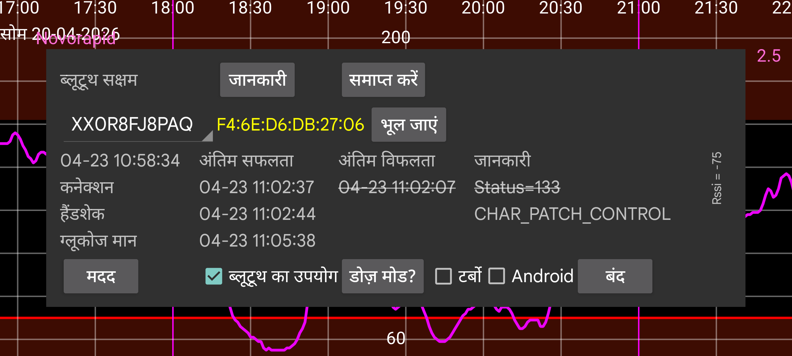

ar be de es fr hi it ja nl pl pt ru tr uk uz zh en
स्पिनर में सेंसर का नाम होता है। यदि Juggluco एक साथ एक से अधिक सेंसर का उपयोग कर रहा है, तो आप वह सेंसर चुन सकते हैं जिसके लिए जानकारी दिखानी है।
डोज़ मोड आपको एक स्क्रीन पर ले जाता है जिसमें Juggluco के लिए बैटरी ऑप्टिमाइज़ेशन कैसे अक्षम करें इसकी जानकारी होती है, जो Juggluco को कार्य करने से रोक सकती है।
ब्लूटूथ इतिहास: Libre 2 पर, इतिहास 15 मिनट के अंतराल पर अतीत के मान हैं। पहले वे केवल स्कैन करके प्राप्त किए जाते थे। जब आप यह विकल्प चालू करते हैं, तो इतिहास मान ब्लूटूथ के माध्यम से भी प्राप्त किए जाते हैं। साथ ही, अन्य चीज़ें अलग तरह से काम करेंगी। Libreview को स्ट्रीम मानों के औसतों के बजाय इतिहास मान भेजे जाएंगे। नुकसान यह है कि यह धीमा है। यह WearOS घड़ियों पर एक समस्या हो सकती है। इस विकल्प का Libre 3 और US/CA/AU/KR Libre 2 सेंसरों पर कोई प्रभाव नहीं है; वे हमेशा ब्लूटूथ के माध्यम से इतिहास मान प्राप्त करते हैं।
बग: केवल Libre 3 के लिए WearOS पर मौजूद। Samsung Galaxy Watch 5 और उच्चतर पर इसे सेट करने की आवश्यकता है, जब तक कि Samsung इस बग को ठीक नहीं करता। इस विकल्प के बिना, ग्लूकोज मान 1 के बजाय 2 मिनट के अंतराल पर प्राप्त होंगे। Watch 5 से Ultra हमेशा Libre 2 सेंसरों से दो मिनट के अंतराल पर मान प्राप्त करेंगे।
⏰: Juggluco को Dexcom G7 और ONE+ सेंसरों से कनेक्ट होने के सही समय को सुनिश्चित करने के लिए एक अलार्म क्लॉक फंक्शन का उपयोग करने दें। इसके बिना, जब डिवाइस उपयोग में नहीं होने पर गहरी नींद में होता है, तो यह कभी-कभी सेंसर से पुनः कनेक्ट होने के लिए नहीं जागेगा और यह तुरंत एक ग्लूकोज मान प्राप्त नहीं करेगा। मेरी WearOS घड़ी को यह समस्या रात के बीच में थी, शायद क्योंकि मैं बहुत कम हिला। बाद में बैकफ़िल और धीमी जागृति के कारण, मैंने इसे घड़ी और फोन पर नहीं देखा, केवल लॉग फ़ाइलों में। मेरे फोन को इस सेटिंग की आवश्यकता नहीं है और जब चालू होती है तो यह खराब प्रदर्शन करता है।
अनुमति: Juggluco के पिछले संस्करणों को सेंसर का डिवाइस पता खोजने के लिए स्थान अनुमति की आवश्यकता थी। यह मेरे उपयोग किए जाने वाले सेंसरों के लिए अब आवश्यक नहीं है। शायद अभी भी कुछ सेंसर हैं जिनके लिए यह आवश्यक है; उस स्थिति में आप इसे चालू कर सकते हैं। पहले संपर्क के बाद Juggluco डिवाइस पता सहेजता है और स्थान अनुमति हमेशा बेकार है। डिवाइस पता, यदि ज्ञात है, तो सेंसर पहचानकर्ता के बाद प्रदर्शित होता है। लाल का मतलब US जैसा सेंसर है। Android 12 में एक नई पास के डिवाइस अनुमति है, जिसका उपयोग ब्लूटूथ डिवाइस पते की खोज के लिए स्थान अनुमति के बजाय किया जा सकता है, पर यह ब्लूटूथ डिवाइसों के साथ बाद के संपर्क के लिए भी आवश्यक है।
भूल जाएं: Juggluco को डिवाइस पता भूलने और डिवाइस पते के लिए स्कैन करने दें। कुछ सेंसरों के लिए यह एक कनेक्शन प्राप्त करने के लिए आवश्यक है और फिर यह Juggluco द्वारा स्वचालित रूप से किया जाता है। इस बटन से आप मैन्युअल रूप से कह सकते हैं कि Juggluco को ऐसा करना चाहिए, क्योंकि शायद अन्य अवसर हैं जिनमें यह भी आवश्यक है।
समाप्त करें: ब्लूटूथ के माध्यम से इस सेंसर से कनेक्ट होना बंद करें। यदि बाद में आप इस सेंसर से फिर से स्ट्रीम ग्लूकोज मान प्राप्त करना चाहते हैं, तो आपको केवल इसे फिर से स्कैन करना होगा। यदि सेंसर सीधे घड़ी से जुड़ा है, तो आपको पहले इसे बंद करना होगा और फिर फोन पर समाप्त करें दबाना होगा और फिर घड़ी पर सिंक दबाना होगा।
अनपेयर: Linx/Lumiflex/Aidex X सेंसर उस फोन या घड़ी को याद रखते हैं जिससे वे पेयर होते हैं और अन्य डिवाइसों से बॉन्ड करने से इनकार करते हैं। “अनपेयर” दबाने से सेंसर को एक कमांड भेजी जाती है और यदि सफल होती है, तो अन्य फोन या घड़ियों के लिए सेंसर से कनेक्ट होना फिर से संभव है। जब आप बायां मेन्यू→घड़ी→WearOS config → “सीधा सेंसर …” का उपयोग सेंसर को घड़ी से और घड़ी पर स्थानांतरित करने के लिए करते हैं, तो अनपेयरिंग भी हो जाएगी, और आपको “अनपेयर” का उपयोग नहीं करना चाहिए।
साफ़ करें: (बटन केवल Linx/Lumiflex/Aidex X सेंसरों से कनेक्ट होने पर
मौजूद।) इस बटन को दबाने से सेंसर से सभी ग्लूकोज मान हट जाते हैं और
सेंसर को नए सेंसर की तरह पुनः आरंभ किया जाता है। यह एक सेंसर को
15 दिनों से अधिक समय तक उपयोग करना संभव बनाता है। जब मैंने इसे आज़माया,
तो सेंसर की समाप्ति तारीख के बाद प्राप्त मान पूरी तरह बेकार थे,
समानांतर में चल रहे Libre 3 सेंसर के लगभग आधे मान थे। यदि कुछ हफ्तों
के बाद, आप दूसरी बार साफ़ करते हैं, तो यह जो ग्लूकोज मान देता है वे
पहले की तुलना में और भी खराब हो जाते हैं (मेरे मामले में बहुत कम)।
यह लंबा सेंसर उपयोग नहीं लगता, बल्कि साफ़ करना समस्या है।
साफ़ करने में ब्लूटूथ डिवाइसों के लिए कई बार स्कैन शामिल होता है।
Android द्वारा एक ऐप को एक निश्चित समय अवधि में डिवाइसों के लिए स्कैन
करने की अनुमति सीमित है। यदि यह अधिक करता है, तो Android बस अनुरोध
को छोड़ देता है। आप केवल ब्लूटूथ बंद और चालू कर सकते हैं, जो इस
गिनती को रीसेट करता है।
रीसेट: केवल Sibionics 2। एक ट्रांसमीटर में सेंसर बदलते समय इस बटन को दबाया जाना चाहिए। या तो जब Juggluco पुराने सेंसर से जुड़ा है और/या जब Juggluco नए सेंसर से जुड़ा है। जब ट्रांसमीटर पहले ही किसी अन्य ऐप द्वारा रीसेट हो चुका है तो आपको इसे नहीं दबाना चाहिए।
टर्बो: सेंसर से संपर्क करने के प्रयास को बढ़ाता है इस उम्मीद में कि यह कम कनेक्शन त्रुटियों का परिणाम देगा, पर अधिक बैटरी शक्ति का उपयोग कर सकता है। Watch4 पर Freestyle Libre 2 सेंसरों के साथ आवश्यक लगता है, पर Freestyle Libre 3 सेंसरों के साथ नहीं और मेरे द्वारा आज़माए गए किसी भी स्मार्टफ़ोन पर नहीं।
Android: Juggluco के बजाय Android को सेंसर से कनेक्शन बनाने दें। इसका उपयोग न करें! अधिकांश मामलों में एक कनेक्शन स्थापित होने में अधिक समय लगेगा। यह विकल्प एक टूटे Android 13 संस्करण के कारण पेश किया गया था, जो बाद में ठीक हो गया। आपको इसे केवल तब चालू करना चाहिए जब इस सेंसर स्क्रीन में कोई हाल के समय प्रदर्शित नहीं होते। इसका मतलब है कि कोई कनेक्शन त्रुटियाँ या सेंसर त्रुटियाँ नहीं दिखाई जातीं, पर कोई मान भी प्राप्त नहीं होते और आप ब्लूटूथ बंद और चालू करके इसे फिर से काम में ला सकते हैं। जब आप एक ही फोन पर एक साथ दो ऐप्स के साथ यूरोपीय Libre 2 सेंसर से कनेक्ट करने का प्रयास करते हैं (जो केवल तब संभव है), तो आप उस स्थिति में भी आ सकते हैं।
जानकारी: सेंसर का आरंभ और अंत समय और अंतिम स्कैन और स्ट्रीम समय देता है।
Low Energy ब्लूटूथ के माध्यम से एक Freestyle Libre 2 सेंसर से कनेक्ट होने के लिए, ब्लूटूथ चालू होना चाहिए। जब तक इस ऐप द्वारा सेंसर सफलतापूर्वक स्कैन नहीं किया जाता, कुछ नहीं होगा। सेंसर FreeStyle रीडर या स्मार्टफ़ोन पर अन्य एप्लेट से जुड़ा नहीं होना चाहिए। Abbott का Libre ऐप अनइंस्टॉल, अक्षम या फोर्स स्टॉप होना चाहिए। यदि आपने Freestyle Reader से सेंसर शुरू किया है और आप इसे बंद नहीं कर सकते, तो आप रीडर को एक Faraday cage में रखकर इसे सेंसर के संपर्क में आने से रोक सकते हैं।
ब्लूटूथ का उपयोग चालू होना चाहिए।
यदि उपरोक्त शर्तें पूरी होती हैं, तो ऐप को सेंसर से ग्लूकोज मान प्राप्त होने में अभी भी लंबा समय लग सकता है। अक्सर इसमें एक मिनट लगता है, पर अन्य समय में इसमें बहुत अधिक समय लगता है। कनेक्शन चरण सबसे अधिक कठिनाइयाँ देता है। सबसे अधिक लगातार status=133 के साथ विफलताएँ हैं, जो onConnectionStateChange(BluetoothGatt bluetoothGatt, int status, int newState) का status तर्क है। इसका मतलब है ब्लूटूथ डिवाइस नहीं मिला। लगभग हमेशा डिवाइस मिलने में कुछ समय लगता है। यह भी संभव है कि सेंसर किसी अन्य डिवाइस से जुड़ा है, अस्थायी रूप से ठीक से काम नहीं कर रहा है, अन्य डिवाइस हस्तक्षेप कर रहे हैं या Android का ब्लूटूथ कार्य नहीं कर रहा है। कभी-कभी ब्लूटूथ बंद और चालू करने से मदद मिलती लगती है या फोन को रीबूट करना या अन्य डिवाइसों के ब्लूटूथ कनेक्शन को बंद करना। अन्य समस्याएं कभी-कभी सेंसर को स्कैन करके हल हो जाती हैं। हस्तक्षेप करने वाला पानी (शरीर के पानी सहित) एक समस्या हो सकती है, ताकि सेंसर से अलग हाथ पर WearOS घड़ी पहनने से कनेक्शन समस्याएँ हो सकती हैं जब हाथों को इस तरह रखा जाता है कि शरीर घड़ी और सेंसर के बीच स्थित हो।
AccuChek SmartGuide के एक उपयोगकर्ता ने बताया कि जब एक ब्लूटूथ खोज सेंसर नहीं ढूंढ सकी, तो इसे Android सेटिंग्स में कनेक्टेड ब्लूटूथ डिवाइसों पर जाकर, सेंसर चुनकर और “भूल जाएं” दबाकर हल किया गया।
Juggluco के साथ किसी अन्य फोन पर (ब्लूटूथ का उपयोग सक्षम के साथ) सेंसर को स्कैन करना, इस फोन से कनेक्शन को चुरा लेगा और इसे फिर से वापस पाने में, बीच में स्कैनिंग के साथ, कुछ समय लग सकता है।